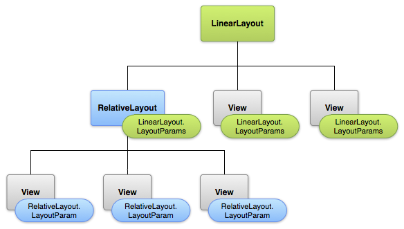

Architettura di Android

.apk avente tutto il codice in un unico fileUna volta installata su un dispositivo, ogni applicazione Android vive nella propria sandbox di sicurezza:
il sistema imposta le autorizzazioni per tutti i file di un'applicazione in modo che solo l'ID utente assegnato a tale applicazione possa accedervi.
ogni processo ha la propria macchina virtuale (VM), per cui il codice dell'applicazione viene eseguito in isolamento da altre applicazioni.
per default ogni applicazione viene eseguita in un proprio processo Linux.
Android inizia il processo quando uno dei componenti dell'applicazione deve essere eseguito, spegne il processo quando non è più necessario o quando il sistema deve recuperare la memoria per altre applicazioni.
per condividere i dati con altre applicazioni e per accedere a servizi di sistema:
due applicazioni possono condividere lo stesso ID utente di Linux, nel qual caso esse sono in grado di accedere ai file degli altri. Per risparmiare risorse di sistema, le applicazioni con lo stesso ID utente possono anche girare nello stesso processo Linux e condividere la stessa VM (le applicazioni devono essere firmate con lo stesso certificato).
un'applicazione può richiedere il permesso di accedere ai dati del dispositivo come ad esempio i contatti dell'utente, messaggi SMS, la memoria di massa (SD card), fotocamera, Bluetooth, e altro ancora.
le autorizzazioni di applicazione devono essere concesse dall'utente al momento dell'installazione.
Ci sono quattro diversi tipi di componenti. Ogni tipo ha uno scopo distinto ed ha un ciclo di vita diverso che definisce come il componente viene creato e distrutto.
Esempio: un'applicazione di posta elettronica potrebbe avere una attività che mostra un elenco di nuove email, un'altra attività per comporre una e-mail, e un'altra attività di lettura delle email. Sebbene le attività lavorano insieme per formare un'esperienza utente coerente nell'applicazione di posta elettronica, ognuna è indipendente dalle altre. In questo modo, una diversa applicazione può attivare una qualsiasi di queste attività (se permesso dal programma di posta elettronica).
e' un componente che viene eseguito in background per eseguire operazioni di lunga durata o svolgere attività per processi remoti.
non fornisce un'interfaccia utente.
Esempio: un servizio può riprodurre musica in background mentre l'utente è in un'altra applicazione, oppure potrebbe recuperare i dati attraverso la rete senza bloccare l'interazione dell'utente con una determinata attività.
Esempio: Android fornisce un Content Provider che gestisce le informazioni di contatto dell'utente. Come tale, tutte le applicazioni con le autorizzazioni appropriate possono interrogare parte del Content Provider (come ad esempio ContactsContract.Data) per leggere e scrivere informazioni su una persona particolare.
e' un componente che risponde ad annunci broadcast a livello di sistema
molti annunci provengono dal sistema operativo, ad esempio, un evento che annuncia che lo schermo è spento, la batteria è scarica, o una foto è stata catturata.
ma anche le applicazioni possono anche avviare tramissione di annunci ad esempio, per consentire altre applicazioni sapere che alcuni dati sono stati scaricati nel dispositivo e sono disponibili per l'uso
Anche se non visualizzano un'interfaccia utente, possono creare una notifica sulla barra di stato per avvisare l'utente
Un aspetto unico di Android è che qualsiasi applicazione può aprire un componente di un'altra.
Esempio: in un'applicazione si desidera che l'utente scatti una foto con la fotocamera del dispositivo.
Non c'e' bisogno di integrare o collegare il codice dell'applicazione della fotocamera. Al contrario, si può semplicemente avviare l'attività nell'applicazione della fotocamera che cattura una foto. Al termine, la foto è anche restituita alla propria applicazione in modo da essere utilizzata. All'utente appare che la sezione di scatto fotografia della fotocamera sia in realtà parte integrante dell'applicazione.
Quando nel sistema si avvia un componente, inizia il processo per l'applicazione (se non è già in esecuzione) e si istanziano le classi necessarie per il componente.
Poiché il sistema esegue ogni applicazione in un processo separato con i permessi dei file che limitano l'accesso ad altre applicazioni, l'applicazione non può direttamente attivare un componente da un'altra applicazione.
Il sistema Android, tuttavia, può, quindi, per attivare un componente in un'altra applicazione, basta consegnare un messaggio al sistema che indica l'Intent di avviare un particolare componente.
sono messaggi asincroni che consentono ad Android di richiedere funzionalita' da altri componenti del sistema Android.
Esempio: un'Activity puo' inviare un'Intent ad Android al fine di fare partire un'altra Activity
Quindi gli Intent consentono di combinare componenti debolmente accoppiati per eseguire certe operazioni.
possono essere usati per segnalare al sistema Android che e' occorso un certo evento
altri componenti in Android possono registrare quell'evento ed essere notificati
gli Intent sono istanze della classe android.content.Intent
Esempio: un'applicazione chiama il componente browser tramite un'intent, l'Intent puo' contenere come dati l'URL con cui si vuole che si apra il componente.
In un progetto Android e' presente un Manifest
AndroidManifest.xml
MyAndroidProject
|-bin
|-gen
|-assets
|-res
|---drawable-hdpi
|---drawable-ldpi
|---drawable-mdpi
|---drawable-xhdpi
|---layout
|---values
\-src
Da Eclipse: New.. | Project | Android Project From Existing Code
cw-lunchlist-master/02-SimpleForm
onCreate(Bundle)
res/layout/main.xml
LinearLayout, RelativeLayout, TableLayout...LunchListLunchList_02 _
Da Eclipse: New.. | Project | Android Project From Existing Code
cw-lunchlist-master/03-FancierForm

Quando viene compilata l'applicazione, ogni layout viene compilato in una View
Si carica la risorsa di layout dal codice applicativo, nella callback Activity.onCreate()
chiamando setContentView() passando il riferimento alla risorsa di layout nella forma
R.layout.<nome_layout>
Esempio:
Ogni View e ViewGroup supporta il proprio insieme di attributi XML
TextView supporta l'attributo textSize)id)Qualsiasi oggetto View puo' avere un ID associato ad esso per identificare univocamente l'oggetto
Quando l'applicazione viene compilata, questo ID e' referenziato come un intero, ma tipicamente viene assegnato nel layout XML come una stringa.
Ecco la sintassi:
android:id="@+id/my_button"
Il simbolo @ indica che il parser XML dovrebbe espandere la stringa dopo lo slash ed identificarla come un ID intero.
Il simbolo + significa che si tratta di una nuova risorsa che deve essere creata e aggiunta al file di risorse R.java
Per le risorse che fanno riferimento ad elementi di Android non c'e' bisogno del simbolo + e possono essere referenziate con questa sintassi:
android:label="@string/app_name"
Per creare view e ottenerne un riferimento dall'applicazione, un pattern seguito e':
Definire la view assegnando un unico ID
Creare un'istanza dell'oggetto e ottenerne un riferimento (sull'onCreate() in genere)
Gli attributi di layout XML che si chiamano layout_<nome_parametro> definiscono parametri per il layout della View relativa al ViewGroup nel quale risiede.
Ogni ViewGroup implementa una nested class che estende ViewGroup.LayoutParams.
Tale sottoclasse contiene tipi di proprieta' che definiscono dimensioni e posizione di ciascuna
view figlia cosi' come definito dalla ViewGroup

Ogni sottoclasse di ViewGroup fornisce una modalita' di visualizzazione delle viste in
essa contenute.
Ecco alcuni esempi di ViewGroup
LunchListLunchList_03Da Eclipse: New.. | Project | Android Project From Existing Code
cw-lunchlist-master/04-ListView
Un adapter fornisce un'interfaccia comune al data model sottostante ai widget di selezione come un ListBox.
Gli adapter di Android sono responsabili dell'elenco dei dati per un widget di selezione oltre a convertire individuali elementi di dato in view specifiche che vengono mostrate dentro il widget di selezione.
LunchListLunchList_04 _
Da Eclipse: New.. | Project | Android Project From Existing Code
cw-lunchlist-master/05-FancyList
/

{kind=link}